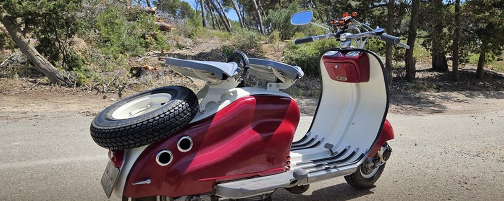
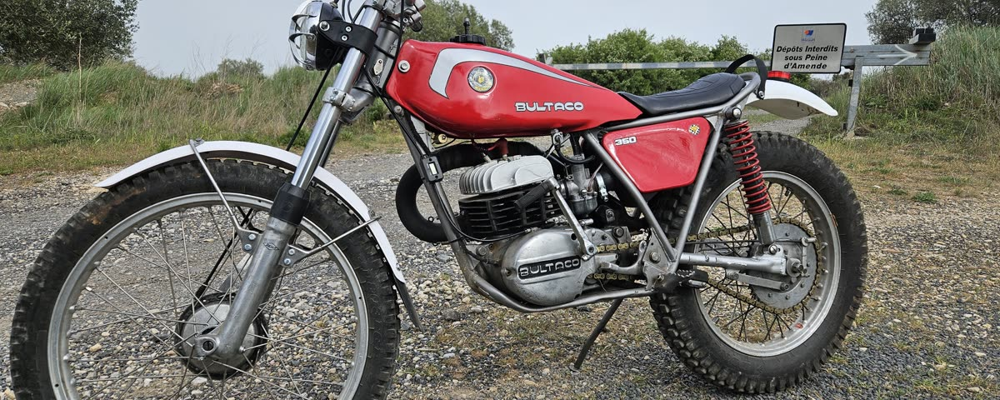

Scooter · 1956
Lambretta LD125
Le carnet de bord de la restauration, étape par étape : photos et vidéos, pièces, temps passé et avant / après.
cyneprod.org
Deux carnets de restauration, une bibliothèque de revues et le suivi d'entretien de mes véhicules : chaque application a son site, ses données et ses comptes.

Scooter · 1956
Le carnet de bord de la restauration, étape par étape : photos et vidéos, pièces, temps passé et avant / après.

Moto de trial · 1976
La renaissance d'une légende du trial espagnol : galerie, chronologie des étapes, fiche technique et coûts.

Bibliothèque · revues
Ma collection de revues anciennes, rangées sur leurs rayonnages : aéromodélisme, Porsche, enduro, trial. Couvertures, mots-clés et plans encartés, pour retrouver un numéro ou un modèle.

Garage · accès privé
Le garage de mes véhicules : entretiens et factures, contrôles techniques, travaux à faire, rappels d'échéances sur le téléphone, coût au kilomètre et bilan d'achat-vente.